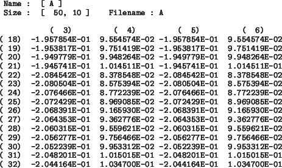

<!DOCTYPE HTML PUBLIC "-//W3C//DTD HTML 3.2 Final//EN">
<!-- Converted with jLaTeX2HTML 98.1p1 release (March 2nd, 1998) + JP patch 2.0 (March 16th, 1998)
patched by Kenshi Muto (mutou@three-a.co.jp), Three-A Systems,Co.,Ltd.
LaTeX2HTML 98.1p1 release (March 2nd, 1998)
originally by Nikos Drakos (nikos@cbl.leeds.ac.uk), CBLU, University of Leeds
* revised and updated by:  Marcus Hennecke, Ross Moore, Herb Swan
* with significant contributions from:
  Jens Lippmann, Marek Rouchal, Martin Wilck and others  -->
<HTML>
<HEAD>
<TITLE>$B<B9TNs$NJT=8(J</TITLE>
<META NAME="description" CONTENT="$B<B9TNs$NJT=8(J">
<META NAME="keywords" CONTENT="MaTX">
<META NAME="resource-type" CONTENT="document">
<META NAME="distribution" CONTENT="global">
<META HTTP-EQUIV="Content-Type" CONTENT="text/html; charset=iso-2022-jp">
<LINK REL="STYLESHEET" HREF="MaTX.css">
<LINK REL="next" HREF="node65.htm">
<LINK REL="previous" HREF="node63.htm">
<LINK REL="up" HREF="node63.htm">
<LINK REL="next" HREF="node65.htm">
</HEAD>
<BODY BGCOLOR=NavajoWhite>
<!-- Navigation Panel -->
<A NAME="tex2html1374"
 HREF="node65.htm">
</A> 
<A NAME="tex2html1370"
 HREF="node63.htm">
</A> 
<A NAME="tex2html1364"
 HREF="node63.htm">
</A> 
<A NAME="tex2html1372"
 HREF="node1.htm">
</A> 
<A NAME="tex2html1373"
 HREF="node247.htm">
</A> 
<BR>
<STRONG> Next:</STRONG> <A NAME="tex2html1375"
 HREF="node65.htm">$BJ#AG9TNs$NJT=8(J</A>
<STRONG> Up:</STRONG> <A NAME="tex2html1371"
 HREF="node63.htm">$B9TNs%(%G%#%?(J(Matrix Editor)</A>
<STRONG> Previous:</STRONG> <A NAME="tex2html1365"
 HREF="node63.htm">$B9TNs%(%G%#%?(J(Matrix Editor)</A>
<BR>
<BR>
<!-- End of Navigation Panel -->

<H1><A NAME="SECTION00810000000000000000">
$B<B9TNs$NJT=8(J</A>
</H1><FONT SIZE="-1">
$B?^(J<A HREF="node64.htm#fig:mated1">5.1</A>$B$O!$9TNs%(%G%#%?$r;H$C$F!$(J(50</FONT><FONT SIZE="-1">10)$B$N<B9TNs$N(J
(18$B9T!A(J32$B9T(J)(3$BNs!A(J6$BNs(J)$B$rF~NO$7$F$$$kMM;R$r<($7$F$$$k!#(J
</FONT>
<P>
<BR>
<DIV ALIGN="CENTER"><A NAME="fig:mated1">&#160;</A><A NAME="3419">&#160;</A>
<TABLE WIDTH="50%">
<CAPTION><STRONG>$B?^(J 5.1:</STRONG>
$B9TNs%(%G%#%?(J ($B<B9TNs(J)</CAPTION>
<TR><TD></TD></TR>
</TABLE>
</DIV>
<BR>
<P>
<BR><HR>
<ADDRESS>
Masanobu KOGA
$BJ?@.(J10$BG/(J8$B7n(J19$BF|(J
</ADDRESS>
</BODY>
</HTML>
